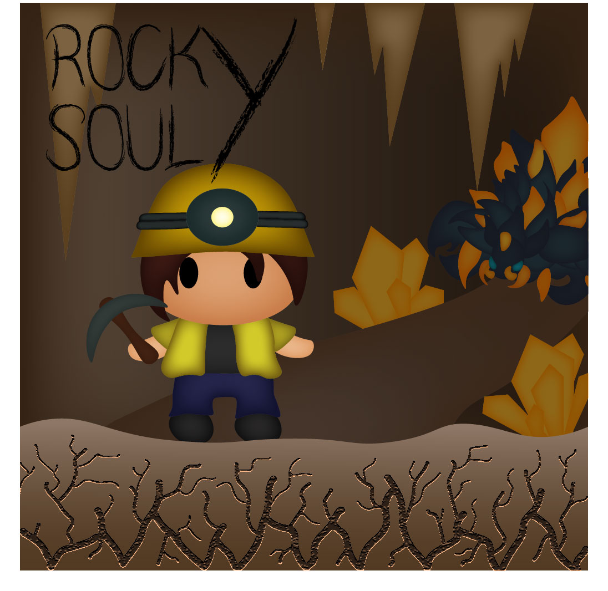

ROCKY SOULY:

Lema del grupo...
- EL JUEGO:
ROCKY SOULY es un metroidvania semi mundo abierto que combina un combate satisfactorio con la exploración y el coleccionismo de reliquias y artefactos por el mapa. Además, contiene npcs los cuales tienen tramas narrativas individuales y conjuntas. El objetivo final es huir de la mina. Para ello, deberás matar una serie de jefes en el orden que el jugador prefiera. Cuando se vayan derrotando dichos jefes, el nivel del juego aumentará y la partida se volverá más difícil.
- EL JUEGO:
ROCKY SOULY es un metroidvania semi mundo abierto que combina un combate satisfactorio con la exploración y el coleccionismo de reliquias y artefactos por el mapa. Además, contiene npcs los cuales tienen tramas narrativas individuales y conjuntas. El objetivo final es huir de la mina. Para ello, deberás matar una serie de jefes en el orden que el jugador prefiera. Cuando se vayan derrotando dichos jefes, el nivel del juego aumentará y la partida se volverá más difícil.
- EL COMBATE:
Se basará en un combate activo en el cual deberás esquivar habilidades y aprender las mecánicas de cada jefe y enemigo, aunque con un gran nivel de habilidad o de exploración, dichos jefes se podrán pasar sin aprenderte las mecánicas de memoria, ya que serán combates muy visuales. Además, podrás ir mejorando tu personaje a medida que exploras y avanzas por el juego, desbloqueando nuevas armas y herramientas, así como accesorios con pasivas y mejoras de nivel, que permitirán hacer nuevos combos entre otras cosas.
- HISTORIA:
El personaje principal, se quedará encerrado en una mina debido a un derrumbamiento. Para salir de aquí, deberá conseguir un artefacto uniendo las piezas que suelta cada jefe. Una vez se tengan todas, el personaje podrá salir de dicha mina. Por otra parte, aparecerán durante nuestra aventura una serie de criaturas fantásticas, incluso civilizaciones, que viven en las profundidades. Todas ellas tienen su propia historia y te ayudarán con la empresa ofreciéndote mejoras, armas y conocimientos(como mecánicas y debilidades de ciertos enemigos o jefes) a cambio de recursos que se podrán obtener por la mina.